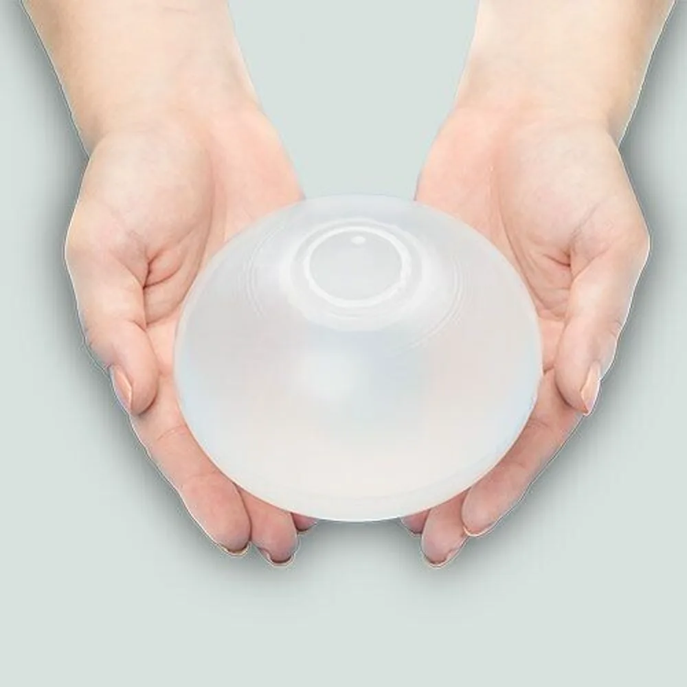

Баллон не волшебная таблетка: что реально работает



Волшебной кнопки нет. Но есть система, которая реально помогает удержать вес после баллона.
Баллон даёт время и условия. Результат зависит от того, что вы сделаете в эти месяцы и после.
Четыре опоры
- Дробное питание. Стабильный уровень глюкозы, интервал между приёмами не больше 3,5 часов, порция 200–250 мл, белок в каждый приём — он даёт длительное насыщение.
- Психотерапия при переедании. При компульсивных срывах баллон не вылечит: нужна КПТ или ДБТ до установки или одновременно. Без этого риск возврата веса — 80%.
- Физическая активность. Силовые тренировки сохраняют мышцы, аэробные — расход калорий и поддержку сердца.
- Наблюдение врача после удаления. Пациенты, которые остаются под наблюдением 6–12 месяцев, удерживают вес значительно лучше: контроль, коррекция питания, поддержка.
Баллон — не финиш, а старт. Он даёт время и создаёт условия. Дальше всё зависит от системы.
Ваш врач Гондусов Д.В. 

Статья носит информационный характер и не заменяет консультацию врача. Не занимайтесь самодиагностикой.